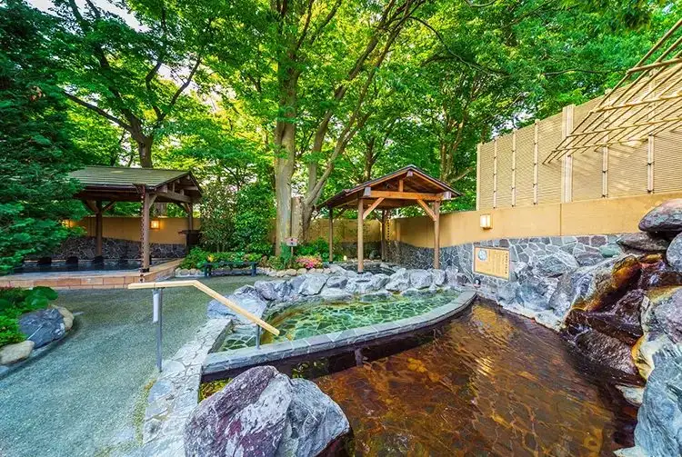

Akishima, Tokyo: things to do, food and stays
Akishima · Tokyo
Akishima
Highlighted on the Tokyo map.

Sights
Dining
Anti Noodles
アンタイヌードルズ

Noodle restaurant in Akishima, Tokyo.
Menya Doppo
麺や独歩

Noodle restaurant in Akishima, Tokyo.
In Camera Semplice

European restaurant in Akishima, Tokyo.
Maru Hiro
○決

Noodle restaurant in Akishima, Tokyo.
Sandaime Shuu
三代目 しゅう

Noodle restaurant in Akishima, Tokyo.
Ooyama Ya Akishima ten
大山家 昭島店

Noodle restaurant in Akishima, Tokyo.
Chuka Soba Tamaya
中華そば たまや

Noodle restaurant in Akishima, Tokyo.
CAFE FUJI
天然氷 蔵元 カフェ不二

Restaurant in Akishima, Tokyo.
Tonkin Tei Akishima ten
東京亭 昭島店

Noodle restaurant in Akishima, Tokyo.
Toto Honten Tachikawa Chinese noodle
とと ホンテン

Noodle restaurant in Akishima, Tokyo.
Ramen Sakamoto
ラーメン サカモト

Noodle restaurant in Akishima, Tokyo.
BEKOROKU STEAK MEAT IMPACT
べこ六 ステーキ ミートインパクト

Meat restaurant in Akishima, Tokyo.
Isana Brewing Brewery & Roastery Reservation
イサナブルーイング ブルワリー&ロースタリー

Cafe in Akishima, Tokyo.
Matatatsu
又達

Noodle restaurant in Akishima, Tokyo.
Yakiniku Beko Roku Akishima ten
焼肉べこ六 昭島店

Meat restaurant in Akishima, Tokyo.
Isshin
一心

Seafood restaurant in Akishima, Tokyo.
Tai Raosu Ryori Mekon Akira Shima
タイ・ラオス料理 メコン 昭島店

Chinese or Asian restaurant in Akishima, Tokyo.
Tanmen Ya
たんめんや

Noodle restaurant in Akishima, Tokyo.
Nakano Grill Akishima moritaun ten
なかのグリル 昭島モリタウン店

Meat restaurant in Akishima, Tokyo.
Shiki Soba Takahashi
四季 蕎麦 たか橋

Noodle restaurant in Akishima, Tokyo.
Niboshi Tsukemen Sandaime Haru
煮干しつけ麺 三代目 はる

Noodle restaurant in Akishima, Tokyo.
Mino
美濃

Meat restaurant in Akishima, Tokyo.
TOKYO CHOCOLATE FARM
トウキョウ チョコレート ファーム

Sweets and bakery shop in Akishima, Tokyo.
Ramen Shop Maruki che-n haijima ten
ラーメンショップ マルキチェーン拝島店

Noodle restaurant in Akishima, Tokyo.
Sansui
山翠

Noodle restaurant in Akishima, Tokyo.
Doppo Haijima ekimae ten
独歩 拝島駅前店

Noodle restaurant in Akishima, Tokyo.
Yakitori Ooshiba Haijima honten
焼き鳥おおしば 拝島本店

Meat restaurant in Akishima, Tokyo.
Izakaya Sakamoto
居酒屋 酒元

Seafood restaurant in Akishima, Tokyo.
Chuka Soba Ueda
中華そば うゑ田

Noodle restaurant in Akishima, Tokyo.
Beko Roku Shokudo Yakitori Dokoro Ippachi
べこ六食堂 やきとり処 一八

Noodle restaurant in Akishima, Tokyo.
Lime
ライム

Meat restaurant in Akishima, Tokyo.
Curry Shokudo
カレー食堂

Japanese restaurant in Akishima, Tokyo.
Unataki
うな瀧

Noodle restaurant in Akishima, Tokyo.
Kobara Cafe Akishima moritaun ten
コバラカフェ 昭島モリタウン店

Cafe in Akishima, Tokyo.
Azuma Ya
あづま家

Noodle restaurant in Akishima, Tokyo.
Hida Bakery
肥田ベーカリー

Sweets and bakery shop in Akishima, Tokyo.